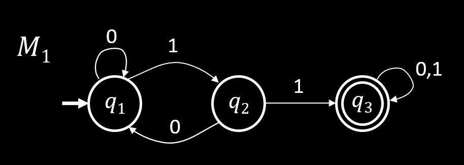

Finite Automata
Model where the size of the memory is fixed / limited compared to the size of the input.

- States: q1,q2,q3
- Transitions: arrows with labels on them
- Start state is the state pointed at with an arrow ($q_1$)
- Accept states are the double circled state ($q_3$)
Finite automata accept strings as input and the output is either accept or reject
- Begin at start state and then follow arrows with the corresponding input symbols
- Accept if end with accept state and reject if otherwise
- Example: 01011 is accept and 0101 is reject
We want to analyze which strings end in accept and which end in reject
- For this finite automaton, all strings that have 11 in them as a substring are accepted
- Language of M1 = L(M1)={w∣w has substring 11}=A
- We say that M1 recognizes A
Formal Definitions
Finite Automata
A finite automaton M is a 5-tuple M=(Q,Σ,δ,q0,F)
- Q - set of states (must be finite)
- Σ - input alphabet (must be finite)
- δ:Q×Σ→Q - transition function
- q0∈Q - start state
- F - set of accept states
For string w=w1w2…wk with wi∈Σ, we say that M accepts w if there exists a sequence of states r0,r1,r2,…,rn∈Q such that:
- r0=q0
- ri=δ(ri−1,wi) for 1≤i≤n
- rn∈F
Language
A set of strings (finite or infinite)
- L(M) is the language of M
- L(M)={w∣M accepts w}
- M recognizes L(M)
The empty string ε is the string with length 0 and the empty language ∅ is the set with no strings.
Regular Language
A language is regular if some finite automaton recognizes it
- A={w∣w contains substring 11} is regular (see above automaton)
- B={w∣w has an even number of 1s} is regular (can make automaton for practice)
- C={w∣w has equal number of 0s and 1s} is not regular (we will prove)
Goal
Understand the regular languages
Regular Operations
Let A and B be languages:
- Union: A∪B={w∣w∈A or w∈B}
- Concatenation: A∘B=AB={xy∣x∈A and y∈B}
- Star: A∗={x1…xk∣ each xi∈A for k≥0}
Note: ε∈A∗
Example: A={good,bad} and B={boy,girl}
- A∪B={good,bad,boy,girl}
- A∘B={goodboy,goodboy,badboy,badgirl}
- A∗={ε,good,bad,goodgood,goodbad,…}
Regular Expressions
Built from a set of atomic symbols (akin to numbers in arithmetic expressions) that are combined using symbols (arithmetic operations)
Symbols are from Σ (any letter in the alphabet) or are either ∅ or ε
These symbols are combined using ∪,∘,∗
Examples with Σ={0,1}:
- (0∪1)∗=Σ∗ gives all strings over Σ
- Σ∗1 gives all strings that end with 1
- Σ∗11Σ∗ gives all strings that contain 11 = L(M1)
Goal
Show finite automata are equivalent to regular expressions
Proposition: Closure under Union
If A1,A2 are regular languages, so is A1∪A2
Proof:
Let M1=(Q1,Σ,δ1,q1,F1) recognize A1 and M2=(Q2,Σ,δ2,q2,F2) recognize A2
We wish to construct M=(Q,Σ,δ,q0,F) recognizing A1∪A2
- Q=Q1×Q2={(q1,q2)∣q1∈Q1,q2∈Q2}
- q0=(q1,q2)
- δ((q,r),a)=(δ1(q,a),δ2(r,a))
- F=(F1×Q2)∪(Q1×F2)
Proposition: Closure under Concatenation
If A1,A2 are regular languages, so is A1∘A2
Proof:
Let M1=(Q1,Σ,δ1,q1,F1) recognize A1 and M2=(Q2,Σ,δ2,q2,F2) recognize A2
We wish to construct M=(Q,Σ,δ,q0,F) recognizing A1∘A2. This M would need to figure out if there is some way to cut an input word W such that W=xy,x∈A1,y∈A2
Might think that we could construct such an M such that we first try to go until M1 accepts and then we switch to M2
- This could fail because there might be multiple possible places to cut W such that the first half is accepted by M1
- We don't want to just cut W at the first possible point
To solve this, we introduce a new topic: Nondeterministic Finite Automata